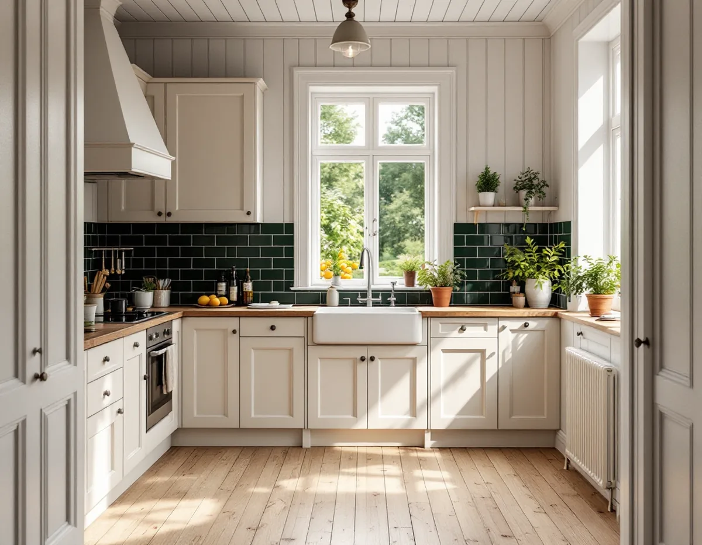
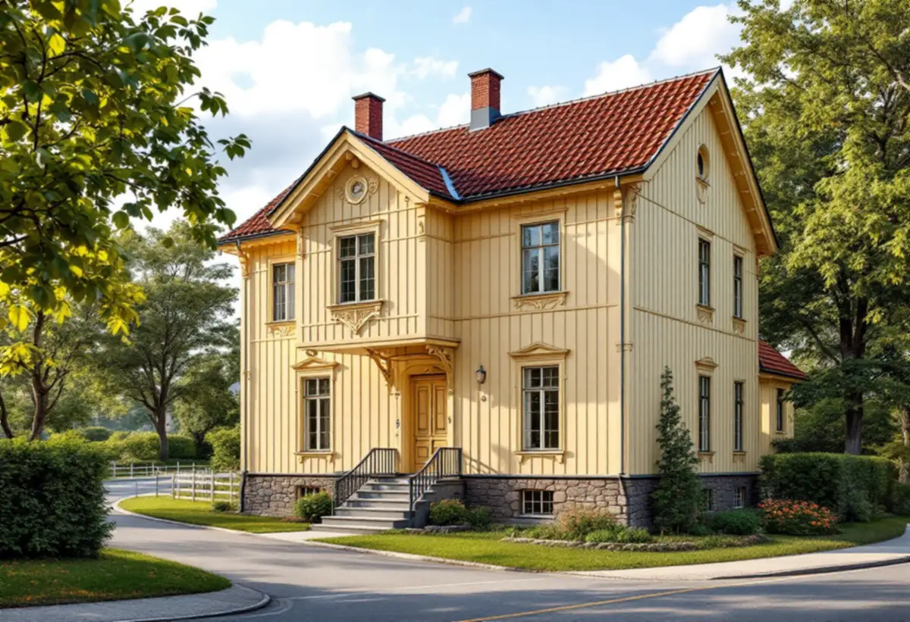

Platsbesök
Vi går igenom kök, fönster, fläkt och stammar, och om huset ligger i Duvbo.

Sundbyberg har två helt olika kök att bygga om: lägenhetsköket i ett flerbostadshus och köket i en villa i Duvbo, där det mesta som syns utifrån kräver bygglov.
Beskriv jobbet kort.
Något blev fel. Kontrollera uppgifterna eller ring 08 12 410 276.
Vi tittar på jobbet på plats innan du får offert.
Du ser vad som ingår och vad det kostar.
Vi drar av ROT direkt och sköter ansökan.
Geal Entreprenad AB, Bromma. Org.nr 559303-7566.

Geal Entreprenad AB bygger om kök i båda sorterna, med gratis platsbesök, skriftligt kostnadsförslag och ROT-avdraget direkt på fakturan.
Enligt stadens miljöprogram för Duvbo bildades föreningen Egna Hem 1898 för att skapa egna hem åt arbetare i bostadsnödens Stockholm. Året därpå köpte föreningen egendomen Dufvebol i Spånga församling och gjorde en stadsplan med 325 tomter, och 1924 utökades området västerut med ytterligare 98 villatomter. Riksantikvarieämbetet pekade 1987 ut Duvbo som riksintresse för kulturmiljövården.
Husen är framför allt byggda vid sekelskiftet 1900 och under 1920-talet, i två våningar på höga nivåutjämnande socklar. Sekelskiftesvillorna byggdes ofta av ägarna själva och har fasader av stående och liggande spontpanel med snickarglädje, medan 1920-talsvillorna är enklare med locklistpanel. På 1930- och 40-talen tillkom slätputsade hus med flacka tak av rött lertegel.
Innan vi föreslår en ny planlösning i ett sådant hus går vi igenom vad som kommer att synas utifrån, eftersom det är där reglerna i Duvbo är strängast.
Sundbybergs stad skriver att det inte längre krävs bygglov för fasadändringar på en- och tvåbostadshus, men att det inte gäller i ett särskilt värdefullt bebyggelseområde som Duvbo. Där krävs bygglov för fasadändringar, och till dem räknar staden bland annat nya fönster och dörrar eller ändring av befintliga, ventilationshuvar och skorstenar.
Miljöprogrammet räknar upp vad den utökade lovplikten i Duvbo omfattar: utbyte av fasadbeklädnad och takmaterial, omfärgning, utbyte, flyttning eller igensättning av fönster och dörrar och andra ändringar som påverkar husets yttre.
Ett större fönster vid diskbänken, en dörr från köket ut mot trädgården eller en ny fläkthuv på fasaden är därför bygglovsfrågor i Duvbo. Vi stämmer av det innan köket ritas, så att väggarna inte behöver öppnas två gånger. Till ansökan hör enligt staden oftast situationsplan, plan- och fasadritning, kulör- och materialbeskrivning och kontrollplan.
På andra håll i Sundbyberg går det att bygga till upp till 30 kvadratmeter utan bygglov, men staden skriver att den lättnaden inte gäller för kulturhistoriskt värdefulla byggnader eller i Duvbo. En köksutbyggnad kräver alltså bygglov där.
Miljöprogrammet ger riktlinjerna. Tillbyggnaden får inte dominera över den ursprungliga huskroppen eller påverka gatubilden, husets ursprungliga volym ska gå att urskilja och tillbyggnaden ska ansluta till husets form, material och färg. Tillbyggnader med plana tak hör enligt programmet inte hemma bland egnahemsbebyggelsen från 1900–1920-talen, och tillbyggnader och uthus ska placeras så att områdets öppenhet bevaras.
Även med bygglov kan en anmälan behövas, till exempel för vatten och avlopp till en diskbänk i den nya delen eller för en eldstad. Hur taket på en tillbyggnad kan anslutas till det gamla läser du om hos takläggare i Sundbyberg.
I ett flerbostadshus behöver du enligt bostadsrättslagen styrelsens tillstånd för att ändra ledningar för avlopp, värme, gas eller vatten och för att installera eller ändra ventilationen. Föreningen svarar för reparationer av ventilationskanaler och av ledningar som den har dragit och som tjänar fler än en lägenhet, så den gemensamma kanalen bakom köksfläkten är föreningens ansvar.
Ska en egen fläkt ha utlopp genom ytterväggen blir det dessutom en fasadfråga. För andra byggnader än en- och tvåbostadshus kräver staden bygglov om ändringen görs på en fasad eller ett tak som vetter mot allmän plats, och ventilationshuvar räknas som fasadändring.
Staden påminner också om att ventilationen ska kontrolleras genom OVK när ett befintligt system byggs om, och därefter vart tredje eller vart sjätte år beroende på systemtyp. Kravet gäller inte en- och tvåbostadshus, och brister ska åtgärdas senast sex månader efter besiktningen. Ta därför reda på hos styrelsen vilken sorts köksfläkt huset är byggt för innan du väljer. Mer om planering finns på sidan om köksrenovering.
Vi går igenom kök, fönster, fläkt och stammar, och om huset ligger i Duvbo.
I Duvbo stämmer vi av vad som kräver bygglov; i en lägenhet tar vi fram underlag till styrelsen.
Rivning, snickeri, el och VVS står som egna poster.
Gamla skåp tas bort och rör, el och fläkt dras enligt den nya planen.
Stomme, bänkskiva och vitvaror monteras.
Fläkt, blandare och vitvaror provas och vi går igenom köket med dig.
Avdraget är 30 procent av arbetskostnaden, högst 50 000 kr per person och år och högst 75 000 kr tillsammans med rutavdrag. I en villa i Duvbo räknar Skatteverket bland annat att riva väggar och bygga om planlösningen, att byta köksluckor och att modernisera elen.
I en bostadsrätt ger arbete på de delar av ventilationskanalen som finns innanför lägenhetens tak, väggar och golv avdrag, men inte rengöring av ventilation och imkanaler. Material och resor ger inget avdrag, och Geal drar avdraget direkt på fakturan.
I Duvbo spelar det roll om köket bara byggs om inne eller om fönster, dörr eller fläkthuv ändras så att bygglov behövs. En tillbyggnad lägger till ritningar, lov och arbete med tak och grund. I lägenheten är huvudfrågan om köket stannar vid stammen eller flyttas. Efter ett gratis platsbesök får du ett skriftligt kostnadsförslag.
Planering, el, VVS, fläkt och väggar.
Köksrenovering i Stockholm →Takbyte, takbesiktning och plåtarbeten.
Takläggare i Sundbyberg →Rött lertegel och synliga taktassar i Duvbo.
Takrenovering i Sundbyberg →Duvbo, potten och medgivandena.
Attefallshus i Sundbyberg →Ventilationen, OVK och Duvbo.
Badrumsrenovering i Sundbyberg →Nytt hus, träd och regler i Duvbo.
Byggföretag i Sundbyberg →Puts och kulör i stadskärnan.
Fasadmålning i Sundbyberg →Panel och puts på Duvbos villor.
Fasadrenovering i Sundbyberg →Duvbo, flerbostadshusen och lovet.
Fönsterbyte i Sundbyberg →Egnahemsvillornas fönster i Duvbo.
Fönsterrenovering i Sundbyberg →Trägolv i äldre villor och nya golv.
Golvläggare i Sundbyberg →Ta bort färg och fernissa från gamla golv.
Golvslipning i Sundbyberg →Lamellhus, kulörbyte och bostadsrätt.
Målare i Sundbyberg →Duvbos tak, rännor och lov.
Plåtslagare i Sundbyberg →Altan, pergola och staket enligt stadens guide.
Snickare i Sundbyberg →Container, ställning och grannar.
Takbyte i Sundbyberg →Ny tapet i äldre lägenheter.
Tapetsering i Sundbyberg →Duvbo, träden och riktlinjerna.
Tillbyggnad i Sundbyberg →Duvbos villor, kaminer och etablering.
Totalrenovering i Sundbyberg →Eller ring 08 12 410 276, mån–fre 08–17.
Beskriv jobbet kort.
Något blev fel. Kontrollera uppgifterna eller ring 08 12 410 276.